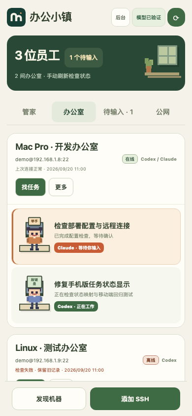

电脑上的任务，
手机上接着聊。
把几台电脑上的 Codex 和 Claude Code 会话放在一起。看做过什么、翻记录，需要补充要求时，直接回复原来的会话。
看一段 42 秒实录通过 SSH 连接你的 Mac 或 Linux 电脑，电脑上不用安装 agentBridge。

代码修好了，怎么还在等我？
问管家哪个任务在等回复，翻一下记录，再选一条草稿。
为什么做办公小镇
任务多了，想有个地方把它们收在一起。
AI 工具用了好几个，事情也散在好几个地方。有时连做过什么都记不清。这是做办公小镇的第一个原因。
还有一个原因：有些事 AI 本来就能自己解决，我不想每个任务都要操心。接下来想让它自己安排和处理日常任务，需要人决定的时候再来问。
自主任务管理还在计划中。当前管家可以查记录、讨论进展和写回复草稿，给员工的指令仍由你在任务卡片里发出。
现在可以怎么用
任务在电脑上继续跑，手机负责查看和回复。
继续原来的任务
打开员工卡片，读输出、补充要求，消息会发回原来的 Codex 或 Claude Code 会话。几台电脑的任务可以一起看，状态需要手动刷新。
问管家，不用逐个翻
配好模型后，可以问管家哪些任务需要回复。管家会查任务和记录；卡片里的「帮我写回复」会生成草稿，由你修改后发送。
也可以用语音聊
按住说话，或用「拨给管家」询问进展。聊天模型、语音识别和声音播报需要先配置、测试，通话在 App 内进行。
安装以后怎么用
先连上电脑，发出第一条回复。
管家和语音可以之后再配置。
连接电脑，找到任务
- 打开 App，用「发现机器」扫描局域网，或手动填写 SSH 地址、账号和密码／私钥。
- 点击「找任务」，导入机器上已有的 Codex、Claude 会话。
- 打开员工卡片查看输出、回复指令，或处理待确认事项。
电脑上要先有 Codex 或 Claude 会话。点击刷新，查看最新状态。在外使用需要可访问的 SSH 地址，也可以配置自己的 FRP 入口。
不知道怎么回，可以点「帮我写回复」。先配置管家模型，再选一条改成你想说的话。建议参考上次刷新的记录，选中后不会自动发送。
和管家聊天、通话
- 在「管家 → 配置模型」填写服务商地址、模型名和 API Key，保存后点击「验证连接」。
- 先发一句文字，确认模型能回复。
- 在「语音设置」试听声音，再用聊天框旁的麦克风测试识别。
- 麦克风和声音都正常后，点击「拨给管家」，允许使用麦克风。
手机不能识别语音或读中文时，在「语音设置 → 云端语音配置」填写百炼北京地域 API Key。语音和聊天可以用不同的密钥。不用云端语音时，手机需要支持语音识别和中文播报。
管家可以查询和讨论任务。给员工的指令仍从任务卡片发出。
安装与更新
需要 Android 7.0 或更高版本。下载 APK 后安装，首次安装时按提示允许浏览器安装应用。旧正式版可直接覆盖更新；调试版会作为另一款应用保留。
安装包发布在 GitHub Releases，使用同一发布密钥签名。下载没开始时，到全部版本里下载 agentbridge-zh.apk。
0.5.44：提供中文「办公小镇」与英文「Office Town」两个安装包。英文版有英文界面、管家回复和语音设置；任务原文保留原来的语言。两个 App 的配置和记录各自保存。
数据保存与隐私
配置、对话与记录保存在手机应用私有存储。密码与 API Key 使用 Android Keystore 加密，应用没有统计上报。
聊天会把必要的任务信息发送到你配置的模型服务。使用百炼云端语音时，录音或播报文字会发送到百炼。详见安全说明。
先把手上的任务放进来
Android 7.0 及以上，约 1.5 MB。